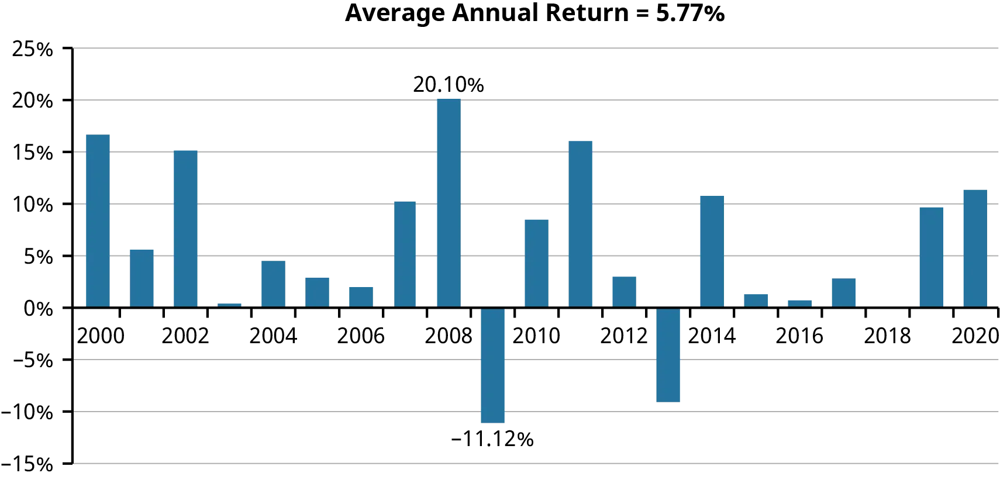
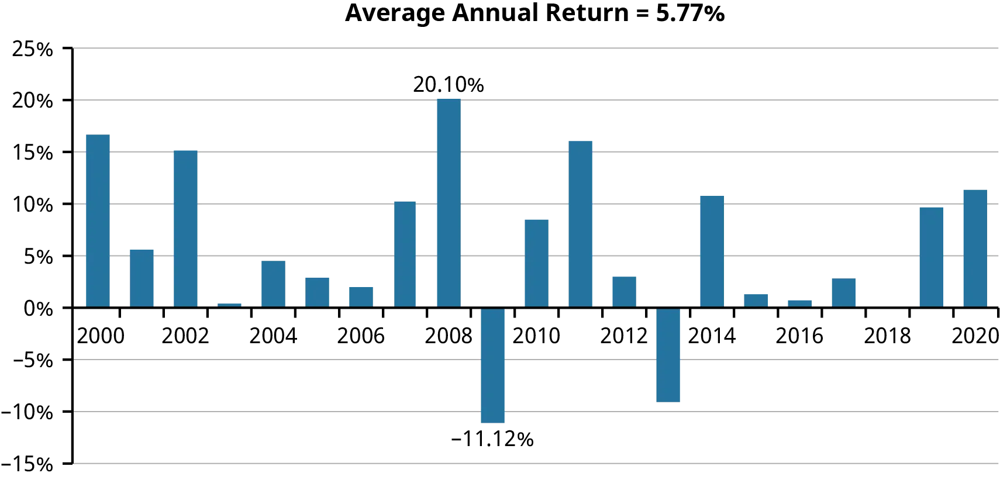
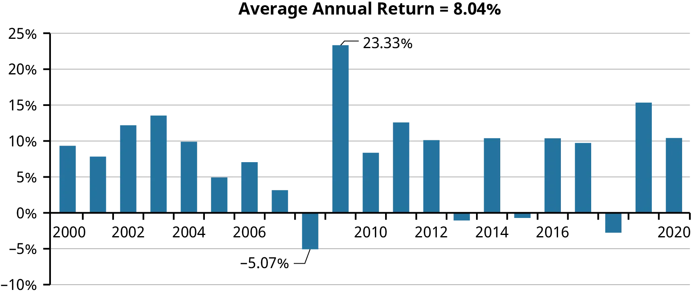
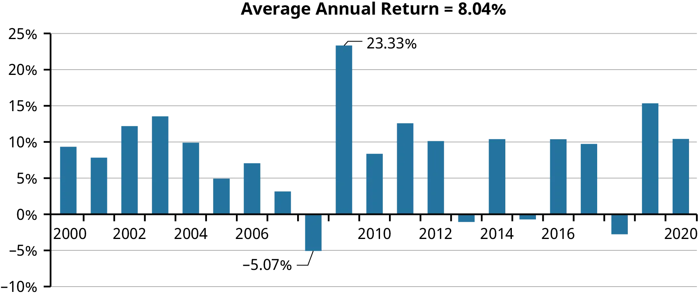

4 Historical Performance of US Markets
- Understand key elements of US money markets.
- Characterize bond markets (government and corporate).
- Summarize US equity market structure and operations.
- Define and exemplify inflation.
- Analyze inflation’s impact on consumption and wages.
- Measure and compare actual vs. expected inflation.
- Review historical inflation and bond (sovereign and corporate) trends.
- Interpret investment and equity market performance from charts.
4.1 Overview of US Financial Markets
4.1.1 Money Markets
- The money market, a multitrillion-dollar market, is known for its short-term (less than one year) and low-risk securities that offer high liquidity.
- Institutions such as financial corporations and governments issue securities in the money market to meet their short-term borrowing and lending needs. These transactions are typically large, with amounts of $10,000, $100,000, $1 million or more.
- Treasury bills (T-bills) are short-term debt instruments issued by the federal government, used to meet short-term liquidity needs. These securities are default-risk free and exempt from state and local income taxes.
- Commercial paper (CP) is a short-term, unsecured debt security issued by corporations and financial institutions to meet short-term financing needs. CP is typically issued with a minimum face value of $100,000 and sells at a discount.
- Negotiable certificates of deposit (NCDs) are large CDs issued by financial institutions. They can be traded in a broad secondary market and are typically issued in amounts of $100,000 or more.
- Money market mutual funds (MMMFs) offer smaller firms and investors the opportunity to participate in the money market by facilitating smaller individual investment amounts.
- The market for federal funds is unique as the Federal Reserve targets the equilibrium interest rate on federal funds as one of its major monetary policy tools.
- The participants in the federal funds market have evolved post the financial crisis of 2008. It now includes foreign banks and non-depository financial institutions and domestic banks have less incentive to enter due to the Fed paying interest on reserves.
4.1.2 Bond Markets
- Bond markets are platforms that allow investors to invest in bonds, which are payments made over a specific period of time.
- There are several types of bonds, including government bonds, corporate bonds, and municipal bonds.
- The government issues Treasury notes and bonds to raise money for current spending and to repay past borrowing. Treasury notes have maturities of 2, 3, 5, 7, or 10 years, while Treasury bonds have maturities of 20 or 30 years.
- Since 1997, the Treasury also offers Treasury Inflation-Protected Securities (TIPS), which have maturities of 5, 10, or 30 years and are adjusted monthly for inflation.
- Municipal bonds (munis) are issued by state and local governments and taxing districts. These bonds can be either revenue bonds or general obligation (GO) bonds.
- Corporations also borrow money from investors for longer-term financing through corporate bonds.
- The risk a bondholder bears for buying a bond depends on the bond contract, market conditions, and the firm’s ability to generate sufficient cash flows to meet its bond obligations.
- Credit rating agencies like Moody’s, Standard and Poor’s, and Fitch evaluate the creditworthiness of bond issuers.
- Over the past 40 years, there has been a decline in AAA-rated companies, as many institutions find that this rating requires a more conservative approach to debt that can inhibit growth and revenue.
| Fitch | Moody’s | S&P | Bond Grade/Risk |
|---|---|---|---|
| AAA | Aaa | AAA | Investment/low risk |
| AA | Aa | AA | Investment/low risk |
| A | A | A | Investment/low risk |
| BBB | Baa | BBB | Investment/medium risk |
| BB | Ba | BB | Junk/high risk |
| B | B | B | Junk/high risk |
| CCC | Caa | CCC | Junk/highest risk |
4.1.3 Equity Markets
- Corporations issue shares of stock representing ownership; however, valuing stocks can be challenging due to the uncertainty and risk of the cash flows they generate.
- Stocks can be issued as common or preferred stock. Common stockholders have voting rights and are residual claimants of the corporation’s assets, while preferred stockholders have a higher claim to cash flows and receive fixed cash flows, like bonds.
- Stock markets have centralized trading locations and require a broker to connect buyers and sellers. Over-the-counter (OTC) markets are electronic and allow direct transactions between buyers and sellers without a broker.
- Initial public offerings (IPOs) occur when a firm offers stock to the public for the first time, typically with the assistance of an investment banker. IPOs are expensive for the issuing firm, typically costing between 5% to 8% of the value of the IPO.
- Seasoned equity offerings (SEOs) occur when a publicly-traded company issues additional shares. Companies may register their intent to issue shares with the SEC and wait until market conditions are favorable before issuing the shares, a process known as a shelf registration.
- Special purpose acquisition companies (SPACs) are a type of IPO where a sponsor raises capital in anticipation of finding a firm ready to go public. The risk and expenses associated with going public are shifted to the SPAC, simplifying the process for the target firm.
- Investors who wish to trade stocks execute trades via a broker. The most common types of orders are market orders, which execute a trade at the current price, and limit orders, which specify the price at which the investor is willing to buy or sell.
4.2 Historical Picture of Inflation
- Returns in the stock market have historically outperformed those in the bond market. However, bonds can outpace inflation, preserving purchasing power better than stocks in some cases.
- Inflation, the rise of prices over time, is a crucial factor to consider in investing. While it can negatively affect purchasing power, inflation is not always bad. For instance, inflation can benefit borrowers, as they repay loans with less-valuable dollars.
- On the contrary, lenders and workers might suffer from inflation as the dollars they receive are less valuable when inflation is higher than expected.
- Deflation, or falling prices, is typically associated with economic recessions or depressions and can be even more damaging than inflation.
- Inflation impacts the distribution of wealth and doesn’t affect all goods and services equally. For example, from 1980 to 2020, college tuition and fees increased at a rate more than double the average inflation rate.
- The Consumer Price Index (CPI) measures changes in prices for a basket of goods across the U.S., with various categories like healthcare and housing having different weights. Different regions and population subgroups can experience different inflation rates.
- Even a modest annual inflation rate can result in significant price increases over time. For instance, a basket of goods and services that cost $100 in 1984 would cost approximately $260 by the end of 2020, a 160% increase.

| Year | 1980 | 2000 | 2020 | Annual Change |
|---|---|---|---|---|
| College tuition and fees | 70.8 | 331.9 | 877.3 | 6.49% |
| Rent | 80.9 | 183.9 | 341.5 | 3.67% |
| Used cars and trucks | 62.3 | 155.8 | 144.2 | 2.12% |
| Ground beef | 104.6 | 125.2 | 296.2 | 2.64% |
| Butter | 89.4 | 135.9 | 248.7 | 2.59% |
| CPI (1982 to 1984 = 100) | 82.4 | 172.2 | 258.8 | 2.90% |
4.3 Historical Picture of Returns to Bonds
4.3.1 Federal Government Bond Behavior
- U.S. Treasury bonds (T-bonds) are considered one of the safest investments and are often used as the benchmark for a risk-free investment in financial modeling.
- Despite their low default risk, T-bond values fluctuate with changes in interest rates, resulting in varying returns for investors year-to-year.
- The period from the late 1970s to early 1980s saw high rates of inflation and interest rates. As these rates began to drop, bond prices rose, and investors saw high returns on their T-bond investments.
- However, when the Federal Reserve raised interest rates, such as in 1999, the prices on existing bonds fell, leading to negative returns for investors.
- From 1980 to 1999, the average annual return on T-bonds was 10.21%, influenced by an above-average annual inflation rate of 4.28%.
- Between 2000 and 2020, as inflation slowed and interest rates were generally lower, T-bond returns also averaged lower at 5.77%.
 

4.3.2 Corporate Bond Behavior
- Corporate bonds, specifically Baa bonds, displayed performance patterns similar to T-bonds over the four decades from 1980 to 2020.
- Baa bonds, which are not default-risk free and require a risk premium, showed an average annual return of 12.07% from 1980 to 1999 and a 2.30% premium over T-bonds from 2000 to 2020.
- The premiums earned from Baa bonds significantly improve investment performance over time. For instance, a $100 investment in a Baa bond portfolio in 1980 would be worth $4,506 by 2020, outperforming the ending value of $1,931 for a similar T-bond portfolio.
 
 
4.4 Historical Picture of Returns to Stocks
- The Dow Jones Industrial Average (DJIA) and the S&P 500 Index are the most frequently quoted stock market indices, with changes in both being highly correlated. Both indices track changes in value of large capitalization stocks.
- As of the end of 2020, the S&P 500 firms had a combined market capitalization of $33.4 trillion, around 66% of the estimated US equity market capitalization of $50.8 trillion.
- The performance of the S&P 500 is widely seen as a good representation of the broader market, especially large capitalization firms.
- Capital market history shows that the average return to stocks significantly outperforms other financial security classes, such as government bonds, corporate bonds, or the money market.
- Investment advisers often prioritize asset allocation over individual security selection, because the decision to invest in stocks rather than bonds typically has a greater long-run payoff.
- Firm size significantly impacts investment decisions in equity securities. Small company stocks have historically realized larger average annual returns, albeit with greater variability, compared to large companies as represented by the S&P 500.
- More recently, the return differential between small and large capital stocks has been less pronounced. From 1980 through 2020, the Wilshire US Small-Cap Index averaged an annual compound return of 12.13% compared to the Wilshire US Large Cap Index average of 11.82%.
| Asset Class | Nominal Average Annual Returns 1981–2020 | Standard Deviation of Returns 1981–2020 |
|---|---|---|
| Large company stocks | 12.64% | 16.06% |
| Baa bonds | 10.34% | 7.67% |
| 10-year T-bonds | 8.21% | 9.92% |
| US T-bills | 3.94% | 3.39% |
| Inflation | 2.93% | 1.76% |


- Calculators for finding returns over selected periods for US stocks, bonds, and inflation. https://openstax.org/r/6-what-to-invest-in
- Another calculator for global equity markets. https://openstax.org/r/returns-of-global-stocks
- the Global Wealth Report published by Credit Suisse. https://openstax.org/r/global-wealth-report
Note
Does It Pay to Time the Market? Over the period 1980 to mid-2020, an investment of $10,000 into an S&P 500 index fund would have yielded the investor $697,421. However, missing the 5 best-performing days in the market would have reduced the final portfolio balance to $432,411. Stay out of the market on the 10 best days, and the balance would have ended at only $313,377, or less than half of the return earned in the full time period.